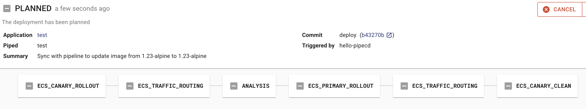
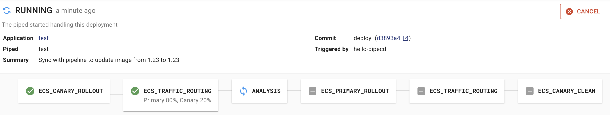
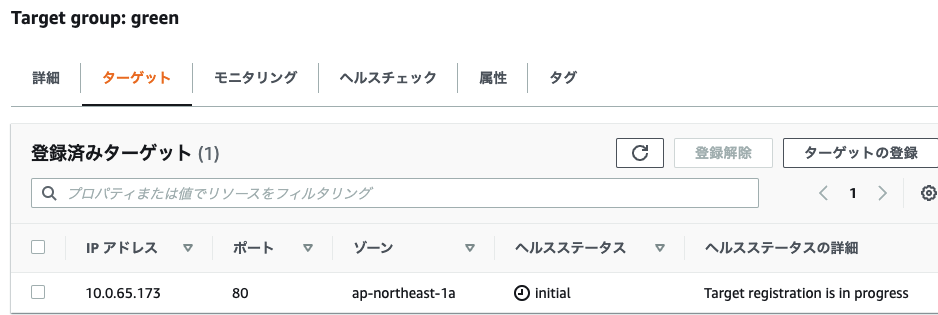
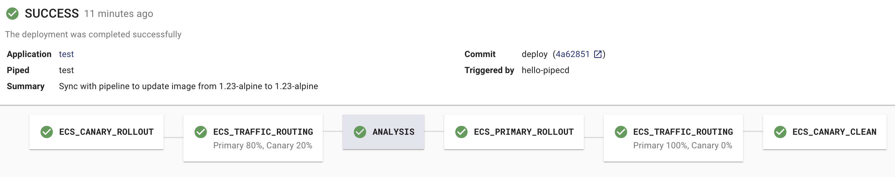
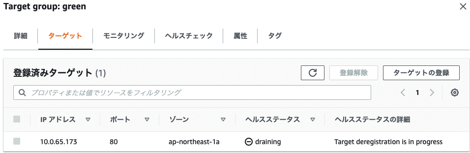
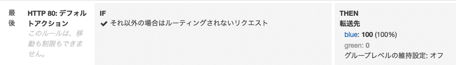
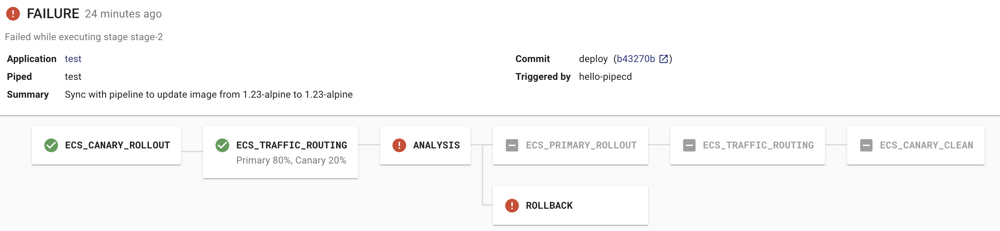

こんにちは @jedipunkz 🚀 です。
今回は CNCF にジョインした PipeCD と Datadog を用いて ECS 環境にてプログレッシブデリバリーを実現する方法について調査したので、その内容を記したいと思います。
そもそもプログレッシブデリバリーとは
アプリケーションのデリバリー方法はカナリーリリースやブルーグリーンデプロイメント等がよく知られていると思います。プログレッシブデリバリーはその一歩先を行くデリバリー方式で、Prometheus や Datadog 等のメトリクスを用いて SLO (SRE の SLO と言うよりはデプロイのための指標という意味での) を元にカナリーリリースしたアプリケーションが期待した動作をしているかを確認し (プログレッシブデリバリー的にはこのフェーズを ANALYSIS という様です)、その上でカナリーリリースを完了するというフローになります。
構成 Pipecd, Piped 共に Kubernetes (EKS) クラスタ上に起動する構成
この検証ではこちらの構成を選択しました。この構成の特徴は
- piped は pipecd の API エンドポイントを指し示す
- pipecd は UI を提供
- pipecd は Filestore (S3, GCS, Minio など), Datastore (MySQL, Firestore など) を利用可 (今回は Minio, MySQL を選択)
- piped は Target Group, ECS タスク定義等の操作を行うため ECS API へのアクセス権限が必要
- piped の pipeline 上のステージで ANALYSIS という Datadog 等のメトリクスを解析する機能を有している
- アプリケーションレポジトリには app.pipecd.yaml を配置しターゲットグループ・タスク定義・ECS サービスを指し示す
- piped は GitHub レポジトリを参照
となっています。
またこちらの公式ドキュメント には piped のプロセスを ECS/Fargate に起動する構成も紹介されていましたが、その際に
- piped -> pipecd のアクセスが同一 namespace 内で完結しないので Ingress が必要
という制約が出てきます。また piped はシングルバイナリでどこで稼働していても同じなので、今回は下記の構成を選択しました。

検証環境の構築手順
前提の環境
前提として下記を事前に構築・準備する必要があります。今回は情報量が多くなってしまうのでここの手順は割愛します。
- ローカルマシンに helm をインストール
- EKS クラスタを構築
pipecdという名前の namespace をアサインしている Fargate Profile を用意blue,greenという ALB ターゲットグループ・リスナーを用意
アプリケーションレポジトリの用意
下記のディレクトリ構成でレポジトリを作成していきます。実際には IAM, Subnet, Security Group 等、構築した環境に合わせる必要があります。
.
├── app.pipecd.yaml
├── servicedef.yaml
└── taskdef.yaml
タスク定義ファイル
taskdef.yaml として保存します。
family: pipecd-nginx-sample
executionRoleArn: arn:aws:iam::********:role/ecs-taskexecution-iamrole
containerDefinitions:
- command: null
cpu: 100
image: public.ecr.aws/nginx/nginx:1.23-alpine
memory: 100
mountPoints: []
name: web
portMappings:
- containerPort: 80
compatibilities:
- FARGATE
requiresCompatibilities:
- FARGATE
networkMode: awsvpc
memory: 512
cpu: 256
pidMode: ""
volumes: []
ECS サービスファイル
servicedef.yaml として保存します。
cluster: arn:aws:ecs:ap-northeast-1:********:cluster/ecs-cluster
serviceName: pipecd-nginx-sample
desiredCount: 2
deploymentConfiguration:
maximumPercent: 200
minimumHealthyPercent: 0
schedulingStrategy: REPLICA
deploymentController:
type: EXTERNAL
enableECSManagedTags: true
propagateTags: SERVICE
launchType: FARGATE
networkConfiguration:
awsvpcConfiguration:
assignPublicIp: ENABLED
securityGroups:
- sg-********
subnets:
- subnet-********
- subnet-********
Piped が参照するコンフィギュレーションファイル
このファイルについて説明すると
- kind: ECSApp として pipecd.dev/vbeta1 API にアクセス
- ECS サービスファイル・タスク定義ファイルの指定を行う
- primary, cannary として先程作成した
blue,greenのターゲットグループを指定する pipeline設定で各パイプラインのステージを指定するECS_CANARY_ROLLOUTで green ターゲットグループの ECS タスクをローリングデプロイECS_TRAFFIC_ROUTINGで green ターゲットグループに対して 20% のトラヒックを寄せるANALYSISで Datadog Metrics にクエリを投げ、閾値超過の際は FAIL するように設定- 下記の例では全体のリクエスト数に対しての 5xx 系エラーの率が 10% を超えない事を期待しています
ECS_PRIMARY_ROLLOUTで blue ターゲットグループの ECS タスクのローリングデプロイを実施ECS_TRAFFIC_ROUTINGで blue ターゲットグループに対して 100% のトラヒックを寄せるECS_CANARY_CLEANで green ターゲットグループの ECS タスクをクリーンアップ
※ ここでは THRESHOLD (閾値超過) の strategy を選択していますが、その他のものについては考察で述べます。
app.pipecd.yaml として保存します。
apiVersion: pipecd.dev/v1beta1
kind: ECSApp
spec:
name: canary
labels:
env: example
team: xyz
input:
serviceDefinitionFile: servicedef.yaml
taskDefinitionFile: taskdef.yaml
targetGroups:
primary:
targetGroupArn: arn:aws:elasticloadbalancing:ap-northeast-1:********:targetgroup/blue/********
containerName: web
containerPort: 80
canary:
targetGroupArn: arn:aws:elasticloadbalancing:ap-northeast-1:********:targetgroup/green/********
containerName: web
containerPort: 80
pipeline:
stages:
- name: ECS_CANARY_ROLLOUT
with:
scale: 30
- name: ECS_TRAFFIC_ROUTING
with:
canary: 20
- name: ANALYSIS
with:
duration: 10m
metrics:
- strategy: THRESHOLD
provider: datadog-provider
interval: 1m
expected:
max: 10
query: |
sum:aws.applicationelb.httpcode_elb_5xx{env:prd,hostname:sample-lb-********.ap-northeast-1.elb.amazonaws.com}.as_count()
/
sum:aws.applicationelb.request_count{env:prd,hostname:sample-lb-********.ap-northeast-1.elb.amazonaws.com}.as_count()
- name: ECS_PRIMARY_ROLLOUT
- name: ECS_TRAFFIC_ROUTING
with:
primary: 100
- name: ECS_CANARY_CLEAN
Pipecd 構築
Pipecd のコンフィギュレーション作成
Pipecd (Control Plane) のコンフィギュレーション control-plane-values.yaml を下記の通り用意します。
運用を想定すると quickstart.enabled: false として S3 や RDS 等を用いる構成が望ましいと思いますが、今回の目的ではないのでここでは quickstart.enabled: true として Pipecd を構築します。
quickstart:
enabled: true
config:
data: |
apiVersion: "pipecd.dev/v1beta1"
kind: ControlPlane
spec:
datastore:
type: MYSQL
config:
url: root:test@tcp(pipecd-mysql:3306)
database: quickstart
filestore:
type: MINIO
config:
endpoint: http://pipecd-minio:9000
bucket: quickstart
accessKeyFile: /etc/pipecd-secret/minio-access-key
secretKeyFile: /etc/pipecd-secret/minio-secret-key
autoCreateBucket: true
projects:
- id: quickstart
staticAdmin:
username: hello-pipecd
passwordHash: "$2a$10$ye96mUqUqTnjUqgwQJbJzel/LJibRhUnmzyypACkvrTSnQpVFZ7qK" # bcrypt value of "hello-pipecd"
secret:
encryptionKey:
data: encryption-key-just-used-for-quickstart
minioAccessKey:
data: quickstart-access-key
minioSecretKey:
data: quickstart-secret-key
mysql:
rootPassword: "test"
database: "quickstart"
Pipecd のデプロイ
下記のように helm を使って EKS 上に Pipecd をデプロイします。
helm install pipecd oci://ghcr.io/pipe-cd/chart/pipecd --version v0.34.0 \
--namespace pipecd --create-namespace \
--values ./control-plane-values.yaml
Piped 構築
Pipecd UI にログインし piped の id, key を取得
kubernetes service に作業端末から port forwarding します。
kubectl -n pipecd port-forward svc/pipecd 8080
ブラウザで http://localhost:8080 にログインします。
- project name: quickstart
- username: hello-pipecd
- password: hello-pipecd
トップページ -> プロフィールアイコン -> Settings に遷移して Piped タブを選択し +ADD ボタンを押下。適当な名前・説明を入力し Piped ID, Key を生成したらメモする
Piped のコンフィギュレーション
piped-key-file に上記で得た Piped Key を記します。
echo '<PIPED_KEY>' > piped-key-file
コンフィギュレーションには下記のような情報を記します。
上記で得た情報等を記します。
- PipeCD UI で得た Piped ID
- PipeCD UI で得た Piped Key ファイルの指定
- 上記の手順で作成した Git レポジトリ指定
- プライベート Git レポジトリにアクセスするための SSH 鍵
- AWS リージョン情報
- AWS 機密情報のファイル指定 (後にローカルのファイルパスを指定)
- AWS 機密情報ファイル内のプロファイル名
- Datadog API, APP Key 指定
apiVersion: pipecd.dev/v1beta1
kind: Piped
spec:
projectID: quickstart
pipedID: <上記で得た PipedID を記す>
pipedKeyFile: /etc/piped-secret/piped-key
apiAddress: pipecd:8080
git:
sshKeyFile: /etc/piped-secret/ssh-key
repositories:
- repoId: <Git レポジトリ名>
remote: git@github.com:jedipunkz/<レポジトリ名>.git
branch: main
syncInterval: 1m
cloudProviders:
- name: sample-ecs
type: ECS
config:
region: ap-northeast-1
credentialsFile: /etc/piped-secret/credentials-key
profile: <AWS Profile 名>
analysisProviders:
- name: rf-sandbox-datadog
type: DATADOG
config:
apiKeyFile: /etc/piped-secret/datadog-api-key
applicationKeyFile: /etc/piped-secret/datadog-application-key
Piped の起動
事前に Datadog API, APP Key の内容をファイルに保存します。
echo '<Datadog API Key>' > datadog-api-key
echo '<Datadog APP Key>' > datadog-application-key
下記の情報を加えて Piped を起動する。
- 上記で作成したコンフィギュレーションファイル名
piped-config-k8s-canary.yaml - 上で作成した Piped Key の内容をしるした
piped-key-file - プライベート Git レポジトリにアクセスするための SSH 秘密鍵
- AWS 機密情報を記したファイル
~/.aws/credentials - Datadog API, APP Key の内容を記したファイル指定
helm upgrade -i piped oci://ghcr.io/pipe-cd/chart/piped --version=v0.34.0 --namespace=pipecd \
--set-file config.data=./piped-config-k8s-canary.yaml \
--set-file secret.data.piped-key=./piped-key-file \
--set-file secret.data.ssh-key=/Users/foo/.ssh/pipecd \
--set-file secret.data.credentials-key=/Users/foo/.aws/credentials \
--set args.insecure=true \
--set-file secret.data.datadog-api-key=./pipecd/datadog-api-key \
--set-file secret.data.datadog-application-key=./datadog-application-key
事前のタスク定義のレジスト
事前に利用するタスク定義をレジストする必要がある。
下記の内容で taskdef-nginx.json というファイルに保存します。
{
"family": "pipecd-nginx-sample",
"executionRoleArn": "arn:aws:iam::********:role/ecs-taskexecution-iamrole",
"containerDefinitions": [
{
"name": "web",
"essential": true,
"image": "public.ecr.aws/nginx/nginx:1.23-alpine",
"mountPoints": [],
"portMappings": [
{
"containerPort": 80,
"hostPort": 80,
"protocol": "tcp"
}
]
}
],
"requiresCompatibilities": [
"FARGATE"
],
"networkMode": "awsvpc",
"memory": "512",
"cpu": "256"
}
下記のように awscli を用いてレジストします。
aws ecs register-task-definition --cli-input-json file://taskdef-nginx.json
aws ecs list-task-definitions | grep nginx #<-- 確認
動作確認
PipeCD UI の Application の画面において下記の内容で PipeCD UI 上の Application を +ADD します。
- Name に任意の名前を入力
- kind で ECS を選択
- Piped で上記の手順で登録した Piped を選択
- Cloud Provider で sample-ecs を選択
- Repository で Git レポジトリ名を選択
- Config Filename で
app.pipecd.yamlを選択
Sync ボタンを押してデプロイ開始。結果 Deployment 画面を確認すると下記の状態になっている。

デプロイが進み、Primary (上記の green) への ROLLOUT (デプロイ) が完了する

Target Group green のターゲットにタスクが一つ起動し始める

また同じタイミングで ALB リスナーを確認すると 20% のトラヒックが green に寄せられていることを確認できる

その後 Deployment が SUCCESS で完了する

その結果 green のターゲットが draining になる

ALB Listener も blue: 100% と Canary リリースの Primary の Target Group へトラヒックが 100% 寄せられている事を確認出来る。これでデプロイ完了となります。

Fail するパターンの動作
常時 0.3 以上のパーセンテージを示しているクエリ(当方の環境)に対して下記のように expected.max: 0.01 と指定してみる。
- name: ANALYSIS
with:
duration: 30m
metrics:
- strategy: THRESHOLD
provider: sample-datadog
interval: 10m
expected:
max: 0.01
query: |
query: |
sum:aws.applicationelb.httpcode_elb_5xx{env:prd,hostname:sample-lb-********.ap-northeast-1.elb.amazonaws.com}.as_count()
/
sum:aws.applicationelb.request_count{env:prd,hostname:sample-lb-********.ap-northeast-1.elb.amazonaws.com}.as_count()
結果としてはパイプラインの ANALYSIS ステージで想定した通り Fail し、結果 ROLLBACK された。

考察
検証環境では Canary リリース・Datadog Analysis・THRESHOLDS 戦略を用いて動作確認し、
- (1) デプロイ開始
- (2) Canary 環境へデプロイ
- (3) 部分的にトラヒックを Canary に寄せる
- (3) Datadog Metrics を解析しつつ問題なければ Primary 環境へデプロイ
- (4) Primary に100%のトラヒックを寄せる
- (5) Canary 環境をクリーンアップ
という流れで、カナリーリリースとプログレッシブデリバリーが実践出来ました。
Datadog Analysis Provider 利用時の注意点
通常であればアプリケーションをデプロイし、ALB のエラー率等を計測しそれを Analysis Provider で指定することになります。その場合 AWS Intergration の機能で Cloudwatch Metrics -> Datadog Metrics とメトリクス情報を送信する必要がありますが、
- 遅延が数分ある
- ALB メトリクスのプロットのインターバルが1分である
という問題が浮上します。
このことは秒単位で exporter からのデータを Scrape する Prometheus では問題になりません。実際 PipeCD は Prometheus を一番のターゲットにして開発されています。(コンフィギュレーションの scrape_interval (default: 1s) に相当する) よって、Datadog を Analysis Provider に利用する際には下記の幾つかの方法を検討する必要があります。
その他の Analysis のパイプライン戦略
検証では THRESHOLDS という閾値設定型の戦略を取りましたが、他にも幾つかの戦略が PipeCD には存在します。下記がそれらです。
(1) PREVIOUS : メトリックを最後に成功したデプロイメントと比較する方法
下記は例で前回 (最後) のデプロイメントのメトリクスクエリ計測結果と比較して、前回よりも偏差が高い場合、Fail する、というものになっています。
apiVersion: pipecd.dev/v1beta1
kind: KubernetesApp
spec:
pipeline:
stages:
- name: ANALYSIS
with:
duration: 30m
metrics:
- strategy: PREVIOUS
provider: my-prometheus
deviation: HIGH
interval: 5m
query: |
sum (rate(http_requests_total{status=~"5.*"}[5m]))
/
sum (rate(http_requests_total[5m]))
(2) CANARY_BASELINE : Canary バリアントと Baseline バリアントの間でメトリックを比較する方法
下記は例で Canary, Baseline とでメトリクスを比較しつつ、最終的に deviantion: HIGH という条件で Fail します。
apiVersion: pipecd.dev/v1beta1
kind: KubernetesApp
spec:
pipeline:
stages:
- name: ANALYSIS
with:
duration: 30m
metrics:
- strategy: CANARY_BASELINE
provider: my-prometheus
deviation: HIGH
interval: 5m
query: |
sum (rate(http_requests_total{job="foo-{{ .Variant.Name }}", status=~"5.*"}[5m]))
/
sum (rate(http_requests_total{job="foo-{{ .Variant.Name }}"}[5m]))
(3) CANARY_PRIMARY (非推奨) : Canary バリアントとPrimary バリアントの間でメトリックを比較する方法
非推奨の戦略。何らかの理由でベースラインバリアントを提供できない場合は、Canary と Primary を比較することができる。
所感
一応 PipeCD と ECS, Datadog を用いることでプログレッシブデリバリーを実践出来ました。運用を想定すると RDS, S3 等を用いる構成を組んだほうが良いと思います。またユーザからのリクエストを受けている ECS とは切り離して EKS 上の PipeCD, Piped を運用出来るので、万が一何かあった際、またバージョンアップ等の移行を想定したとしても比較的運用しやすいように思います。あとは考察のところに記した Datadog を用いる際に出てくる難しさをどうクリアするかはいくつかの検討を重ねる必要がありそうです。そのあたりの詳細については自分が努めている企業のテックブログの方に記したいと思います！